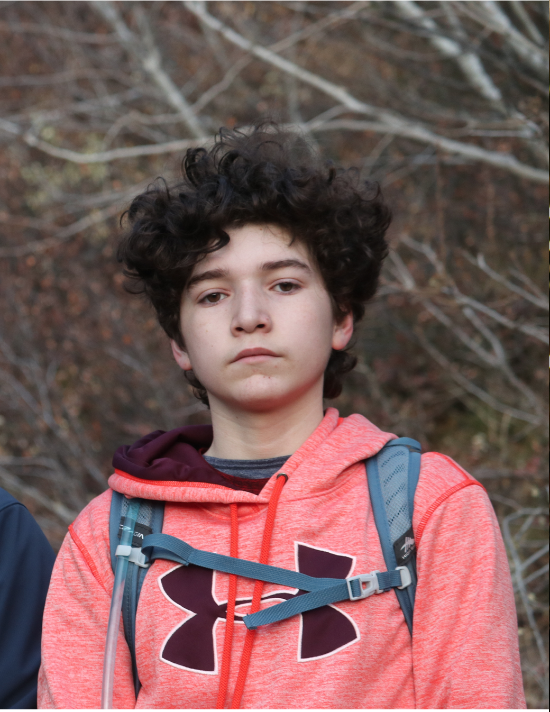

About Me
Isaac Reyes
Hello World!
My degree and career are undecided, although I know that I am wanting to do something that has to do with computers.
I couple of things I enjoy are cooking, biking, hiking, and hammocking.
No, I am not married.
No, I do not have a job.
One thing that I enjoy about BYU-I is that I can do a lot of courses online. I am working towards my associates as of now.
Web design is all around us. I have always liked to be able to create something totally from scratch. This is a course that will help me to better understand the basics.
I have been a member of the church my entire life.